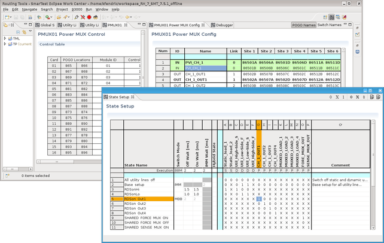

SmartRDI: DUT board connections control by Routing Tools
The Routing Tools feature native multisite handling, user friendly table based configuration editors and a unified programming interface for controlling utility lines.
The Routing Tools are a combination of the Routing Tools editors and the rdi.route() class of SmartRDI. The rdi.route() class, which is described in this section, applies the data, that are defined using the Routing Tools editors, to the controlled hardware.
The Routing Tools provide additionally the following features:
- Static and pattern‑based control of utility lines
- Definition of switch behavior and wait time handling
- Automatic generation and download of control pattern supported by SmartRDI

The Routing Tools consist of the combination of the Routing Tools editors as shown above and corresponding APIs of SmartRDI. that are described in this section. Configuration data exchange between the editors and SmartRDI is realized by an XML file.
Overview of the Routing tools APIs
| API | Description | Mode |
|---|---|---|
| rdi.route().downloadPmuxMemSet() | Download PMUX states. | C |
| rdi.route().applyState() | Apply selected state for utility lines or PMUX switches. | C + P |
| rdi.route().pin().setOn() | Close single PMUX switch or a list of PMUX switches. | P |
| rdi.route().pin().setOff() | Open single PMUX switch or a list of PMUX switches. | P |
| rdi.route().reset() | Reset all PMUX switches and utility lines. The reset state is defined as follows:
|
C |
| rdi.route().enableOnlyActiveSites() | Enables the utility line and PMUX switch settings on active sites and disables them on inactive sites. | C |
APIs for debugging
| API | Description | Mode |
|---|---|---|
| rdi.route().showPmuxStatus() | Show status of the PMUX switches | C |
| rdi.route().showPmuxSensorStatus() | Show status of the PMUX humidity and temperature sensors | C |
Functional changes
- Introduced in SmartRDI 2.5.0